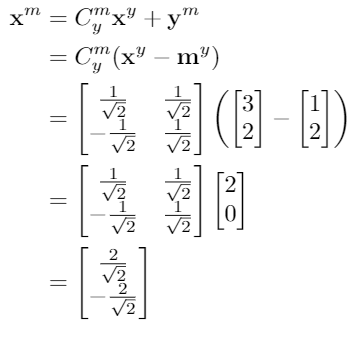
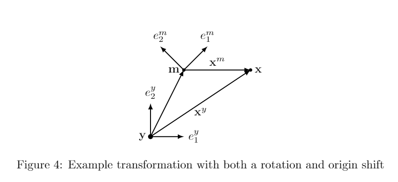
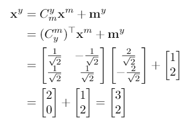

3.3 Combined rotation and translation
Now, let's combine these two operations together. Note that you can never add vectors together unless the numbers inside those vectors correspond with the same vector directions. This is the cause of many mistakes.
Always, always align axes first! Linguistically, to convert a vector x from my coordinate system xm to yours (xy):
- Rotate the vector so the axes are aligned
- Add the origin of my coordinate frame (in your axes!) to the rotated vector
Put mathematically:
The inverse of this operation can also be expressed as:
Note that
my =
-C
ymym, so we also have:
Let's walk through an example. In Figure 4, the point
xy is at (3,2), the m coordinate frame axes are rotated 45° from the y coordinate frame axes, and
my is (1,2). Given this information, we can
solve for
xm.


Now, let's see if we can go backwards and recover the original vector as well.

This demonstrates the capability to move from any coordinate frame to another coordinate frame and back again without loss of information.
← Previous
Next →